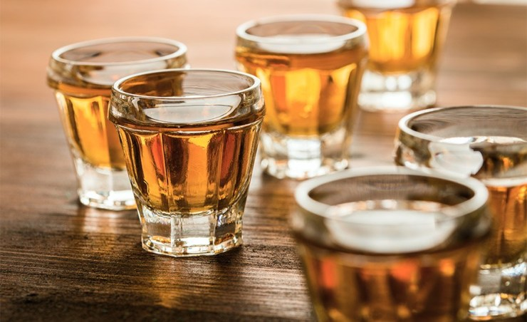

Nossas Cachaças
Descubra a variedade e a excelência dos nossos destilados artesanais.
O Sabor da Tradição em Cada Garrafa
Em nossa cachaçaria, a paixão pela arte de destilar se traduz em uma linha de produtos que atende aos mais diversos paladares. Do frescor da cachaça branca ao complexo envelhecimento em madeiras nobres, cada gota conta uma história.
Cachaças Brancas

Cachaças Envelhecidas


Edições Especiais

Cachaça Reserva Especial
Nossa joia rara, limitada e com envelhecimento prolongado.
Ver DetalhesAlguma Dúvida?
Entre em contato conosco para saber mais sobre nossos produtos ou fazer um pedido.
Fale Conosco